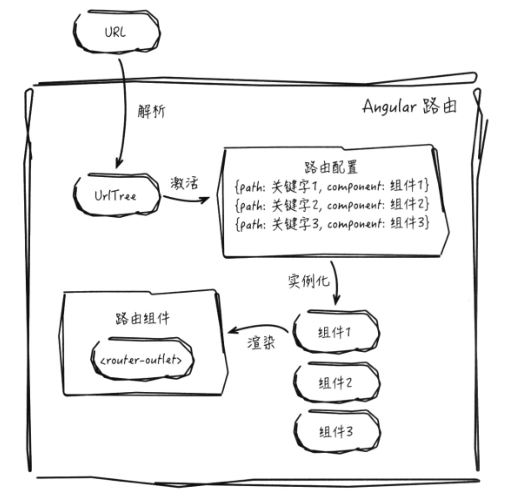

Angular2入门-路由-1
学习路由的相关内容，包括路由的基本原理、路由跳转、参数传递等。如何使用路由来对各组件进行管理，如何通过对各组件进行灵活搭配来满足不同业务场景的需求。
概述和基本用法
路由所需要解决的核心问题是通过建立URL和页面的对应关系，使得不同的页面可以用不同的URL来表示。主流前端框架围绕这个问题给了各自的路由实现，虽然语法和工作机制各不相同，但理念却殊途同归。
在Angular中，页面由组件构成，因此URL和页面的对应关系实质上就是URL和组件的对应关系。建立URL和组件的对应关系可通过路由配置来指定。路由配置包含多个配置项，最简单的情况是一个配置项包含了path和component两个属性，path属性将被Angular用来生成一个URL，而component属性则指定了该URL所对应的组件。
在定义了路由配置后，Angular路由将以其为依据，来管理应用中各个组件，路由的核心工作流程如下图：

- 当用户在浏览器输入URL后，Angular将获取该URL并将其解析生成一个UrlTree实例
- 在路由配置中寻找并激活与UrlTree实例匹配的配置项
- 为配置项中指定的组件创建实例
- 将该组件渲染于路由组件的模板中
<router-outlet>指令所在位置
Angular路由最为基本的用法是将一个URL所对应的组件在页面中显示出来，有3个步骤：
- 定义路由配置
- 创建根路由模块
- 添加
<router-outlet>指令标签
以联系人列表页和收藏页为例。
1.路由配置
路由配置是一个Routes类型的数组，数组的每一个元素即为一个路由配置项。1
2
3
4
5
6
7
8
9
10
11// app.routes.ts
import { Routes } from '@angular/router';
import { ListComponent } from './list/list.component';
import { CollectionComponent } from './collection/collection.component';
export const rootRouterConfig: Routes = [
// ...
{path: 'list', component: ListComponent },
{path: 'collection', component: CollectionComponent },
];
2.创建根路由模块
根路由模块包含了路由所需的各项服务，是路由工作流程运行的基础。通过调用RouterModule.forRoot()方法来创建根路由模块，传入路由配置rootRouterConfig。1
2
3
4
5
6
7
8
9
10
11
12
13// app.module.ts
import { ModuleWithProviders } from '@angular/core';
import { RouterModule } from '@angular/router';
import { rootRouterConfig } from './app.routes'
let rootRouterModule: ModuleWithProviders = RouterModule.forRoot(rootRouterConfig);
({
imports: [rootRouterModule],
// ...
})
export class AppModule{}
根路由模块默认提供的路由策略为PathLocationStrategy，该策略要求应用必须设置一个base路径，作为前缀来生成和解析URL，设置base路径最简单的方式是在index.html文件中设置<base>元素的href属性。
3.添加RouterOutlet指令
RouterOutlet指令的作业是在组件的模板中开辟出一块区域，用于显示URL对应的组件。Angular将模板中使用了<router-outlet>标签的组件统称为路由组件。1
2
3
4<!-- app.component.html -->
<main class="main">
<router-outlet></router-outlet>
</main>
路由策略
Angular提供PathLocationStrategy和HashLocationStrategy两种路由策略，分别表示使用URL的path部分和hash部分来进行路由匹配。
以通讯录联系人列表页的配置项为例：
- 使用PathLocationStrategy策略，URL是
http://localhost:3000/list - 使用HashLocationStrategy策略，URL是
http://localhost:3000/#/list
HashLocationStrategy策略
HashLocationStrategy策略是Angular最为常见的策略，原理是利用了浏览器在处理hash部分的两个特性：
- 浏览器向服务器请求时不会带上hash部分的内容，对于HashLocationStrategy策略配置项所对应的URL，浏览器向服务器发送的请求都是同一个，服务器只需返回首页，Angular在获取首页后根据hash的内容去匹配路由配置项并渲染相应的组件。
- 更改URL的hash部分不会向服务器重新发送请求，这使得在跳转的时候不会引发页面的属性和应用的重新加载
使用该策略，只需在注入路由服务时使用useHash属性指定：1
2
3
4
5
6// app.module.ts
({
imports: [RouterModule.forRoot(rootRouterConfig, {useHash: true})],
// ...
})
export class AppModule{}
PathLocationStrategy策略
PathLocationStrategy使用URL的path部分来进行路由匹配，因此与HashLocationStrategy策略不同，浏览器会将配置项对应的URL原封不动的发送到服务器。
作为Angular的默认路由策略，其最大的有点在于为服务器端渲染提供了可能，比如，当使用PathLocationStrategy策略获取联系人列表页时，浏览器会向服务器发送请求http://localhost:3000/list，服务器可以通过解析URL上的path部分/list得知所访问的页面，对其进行渲染并将结果返回给浏览器，而当使用HashLocationStrategy策略时，由于hash不会发送到服务器，所以个页面请求的都是同一个URL，导致服务器无法通过URL得知所要访问的页面，也就无从渲染了。
使用PathLocationStrategy策略必须满足3个条件：
- 浏览器支持H5的history.pushState()方法，此方法是RouterLink指令在跳转时即使更改了URL的path部分也不会引起页面刷新的关键。
- 需要在服务器进行设置，将应用的所有URL重定向到应用的首页，这个因为该策略所生成的URL在服务器上并不存在对应的文件结构，如果不重定向，服务器将返回404错误。
- 需要为应用设置一个base路径，Angular将以base路径为前缀来生成和解析URL，好处是服务器可以根据base路径来区分来自不同应用的请求。
设置base路径有2个方式，一个是通过设置<base>标签的href属性。另一个就是通过向应用注入APP_BASE_HREF变量来实现：1
2
3
4
5
6
7
8// app.module.ts
import { Component, NgModule } from '@angular/core';
import { APP_BASE_HREF } from '@angular/common';
({
providers: [{provide: APP_BASE_HREF, useValue: '/app'}], // 将base路径设置为'/app'
})
export class AppModule {}
若两种方式同时使用，则APP_BASE_HREF变量优先级更高。
路由跳转
Web中页面跳转，指的是应用响应某个事件，从一个页面跳转到另一个页面的行为。对于使用Angular构建的单页应用而言，页面跳转实质就是从一个配置项跳转到另一个配置项的行为。当某个事件引发了跳转时，Angular会根据跳转时的参数生成一个UrlTree实例来和配置项进行匹配，若成功则显示相应的组件并将新URL更新在浏览器地址栏上，若匹配不成功则报错。
ANgular应用进行页面跳转有2种方式。
使用指令跳转
指令跳转通过使用RouterLink指令来完成，该指令接收一个链接参数数组，Angular将根据该数组来生成UrlTree实例进行跳转。通讯录例子中的FooterComponent组件将RouterLink指令应用在a标签上，分别为联系人列表页和收藏页定义了两个超链接，当用户单击超链接时便会跳转到相应的页面:1
2
3
4
5
6
7
8<!-- app/shared/footer.component.html -->
<nav>
<!-- http://localhost:3000/collection -->
<a [routerLink]="['/collection']"> <i>收藏</i></a>
<!-- http://localhost:3000/list -->
<a [routerLink]="['/list']"> <i>通讯录</i></a>
</nav>
若不借助RouterLink指令而是使用原生HTML的方式来定义超链接（如<a href="/collection"><i>收藏</i></a>），则单击链接后会导致页面重新加载。
Angular通过以下两个步骤保证在不重新加载应用的情况下完成跳转
- 在click事件中调用preventDefault()方法来禁止a标签的默认行为（阻止向服务器发送默认的GET请求，避免跳转加载）
- 调用Router.navigateByUrl()方法来启动跳转流程
RouterLink的源码如下：1
2
3
4
5
6('click', ['$event.button', '$event.ctrlKey', '$event.metaKey'])
onClick(button: number, ctrlKey: boolean, metaKey: boolean): boolean {
// ...
this.router.navigateByUrl(this.urlTree); //跳转至指定页面，渲染对应组件
return false; // 当HostListener装饰器返回false时，Angular会调用preventDefault方法
}
RouterLink指令的一个特性就是它可以应用在任何HTML元素上，使得页面跳转不需要依赖超链接。例如：<button [routerLink]="['/list']"> <i>通讯录</i></button>
当RouterLink被激活时，还可以通过RouterLinkActive指令为其相应的HTML元素指定CSS类。比如定义一个CSS类.active，通过routerLinkActive将其赋给收藏页的链接，当单击该链接后，CSS类将被应用到标签上：1
2
3
4
5
6
7
8<!-- footer.component.html -->
<nav>
<!-- http://localhost:3000/collection -->
<a [routerLink]="['/collection']" routerLinkActive="active"> <i>收藏</i></a>
<!-- http://localhost:3000/list -->
<a [routerLink]="['/list']"> <i>通讯录</i></a>
</nav>
而routerLinkActive指令除了可以用于routerLink所在的元素外，还可以作用于这些元素的任意祖先元素，当该祖先元素下的任意routerLink处于激活状态时，该祖先元素都将获得routerLinkActive指定的CSS类,下例中当前页面无论是在收藏页或通讯录页，nav标签都将获得CSS类：1
2
3
4
5
6
7
8<!-- footer.component.html -->
<nav routerLinkActive="active">
<!-- http://localhost:3000/collection -->
<a [routerLink]="['/collection']"> <i>收藏</i></a>
<!-- http://localhost:3000/list -->
<a [routerLink]="['/list']"> <i>通讯录</i></a>
</nav>
使用代码跳转
从RouterLink指令的部分源码可知，跳转流程是通过调用Router.navigateByUrl()方法来启动的，RouterLink指令仅响应click事件，若需要响应其他事件或需要根据运行时的数据动态决定跳转，则可以通过调用Router.navigateByUrl()或Router.navigate()来完成。
假如需要在进入联系人页后1s自动跳转到收藏页的功能：1
2
3
4
5
6
7
8
9
10
11// list.component.ts
import { Router } from '@angular/core';
// ...
export class ListComponent implements OnInit {
constructor(private _router: Router){
setTimeout(() => {
_router.navigateByUrl('/collection');
// 或 _router.navigate(['/collection']);
}, 1000);
}
}
Router.navigateByUrl()和Router.navigate()的底层,最终都是通过调用Router.scheduleNavigation()方法来执行跳转，不同的地方在于两个方法指定跳转的目标配置项的方式。Router.navigateByUrl()方法通过一个URL字符串或UrlTree实例来指定。1
2
3
4
5
6
7
8
9
10navigateByUrl(url: string|UrlTree, extras: NavigationExtras = {skipLocationChanges: false}): Promise<boolean> {
if(url instanceof UrlTree){
return this.scheduleNavigation(url, extras);
}else {
// 解析URL字符串生成对应的UrlTree实例
const urlTree = this.urlSerializer.parse(url);
// 使用UrlTree实例进行跳转
return this.scheduleNavigation(urlTree, extras);
}
}
而Router.navigate()方法和RouterLink指令相似，通过链接参数数组来指定：1
2
3
4navigate(commands: any[], extras: NavigationExtras = {skipLocationChanges: false}): Promise<boolean> {
// 通过链接参数数组生成对应的UrlTree实例
return this.scheduleNavigation(this.createUrlTree(commands, extras), extras);
}
这两个方法除了可以通过第一个参数来指定目标配置项外，还支持用extras参数定义跳转的具体行为。例如，若想要在不改变URL的情况下完成跳转,可调用_router.navigateByUrl('/collection', {skipLocationChange: true})
路由参数
在组件部分中学习如何使用@Input装饰器向组件传递数据，除此外，Angular路由还提供了路由参数的功能，允许通过URL向组件传递数据，在通讯录例子中，若想通过URL对不同的联系人进行区分，一种简单的实现方式是将联系人的id添加到URL中，此后联系人详情页通过提取URL中的联系人id便可以进一步获取该联系人的详情并予以显示。
Angular路由获取URL参数包括Path参数和Query参数两种。
Path参数
Path参数指通过解析URL的path部分来获取参数，在定义一个配置项的path属性时，可以使用/字符对path属性进行分段，若一个分段以:字符开头，则URL中与该分段进行匹配的部分将作为参数传递到组件中。
以联系人详情页的路由配置项为例，其定义了一个名为id的Path参数，例如http://localhost:3000/detail/1,参数id为1。1
2
3
4
5
6
7// app.routes.ts
export const ContactAppRouters: RouterConfig = [
{
path: 'detail/:id',
component: DetailComponent
}
]
注意：只有当URL解析出来的分段数与Path属性的分段数一致时，才能匹配到该配置项。例如：
http://localhost:3000/detail分段数为1http://localhost:3000/detail/1分段数为2http://localhost:3000/detail/1/segment分段数为3
给路由参数赋值，除了可以直接在浏览器上输入URL外，还可以通过RouterLink指令或跳转方法来完成。1
2
3
4
5
6
7
8// Angular 会将链接参数数组的每一个非对象元素当成一个分段进行拼接
// 如下的链接参数数组对应的path为 'detail/1'
<a [routerLink]="['/detail', 1]">
_router.navigate(['/detail', 1]);
// 或直接指定path
_router.navigate(['/detail/1']);
在组件中获取Path参数，需要导入ActivatedRoute服务，该服务提供了两种方式，分别适用于不同页面间跳转和同一页面内跳转。
Angular应用从一个页面跳转到另一个新页面，实质上是从一个配置项跳转到另一个配置项，在这个过程中，Angular除了会为配置项所对应的组件创建实例外，还会为该配置项本身创建一个ActivatedRoute实例来表示该配置项已被激活。该ActivedRoute实例包含了一个快照（即snapshot属性），记录从当前URL中解析出来的所有Path参数。
以通讯录例子中的DetailComponent组件如何通过snapshot属性获取Path参数：1
2
3
4
5
6
7
8
9
10
11
12
13
14
15
16
17
18
19
20// detail.component.ts
// 1. 导入ActivatedRoute服务
import { ActivatedRoute } from '@angular/router';
// ...
export class DetailComponent implements OnInit, OnDestroy{
contact_id: string;
constructor(private _activatedRoute: ActivatedRoute){
console.log('创建DetailComponent组件实例');
}
ngOnInit(){
// 2. 通过snapshot获取path参数
this.contact_id = this._activatedRoute.snapshot.params['id'];
console.log('参数id值为:'+ this.contact_id);
}
// ...
}
访问http://localhost:3000/detail/1即可看到输出的id值为1.
如何在通讯录例子页面跳转时获取参数值？
首先在联系人详情组件的模板detail.component.html上添加一个链接，希望达到的效果是当单击该链接后，能够显示下一名联系人的信息。1
2
3
4
5
6
7
8
9
10
11
12
13<!-- detail.component.html -->
<div class="detail-contain">
<div class="header-detail">
<a [routerLink]="['']" class="back-to-list">
<i class="icon-back"></i>所有联系人
</a>
<a [routerLink]="['/detail', nextContactId()]" class="back-to-list">
下一个联系人
</a>
<!-- .... -->
</div>
<!-- .... -->
</div>
nextContactId()方法通过简单的加1来获取下一名联系人的id：1
2
3
4
5
6
7
8// detail.component.ts
// ...
export class DetailComponent implements OnInit, OnDestroy {
// ...
nextContactId(){
return parseInt(this.contact_id) + 1;
}
}
假设当前URL为http://localhost:3000/detail/1,单击下一个联系人链接后，URL按照预期变成了http://localhost:3000/detail/2，但在页面上显示的仍然是原先联系人的信息，这个因为Angular在处理同一个页面内跳转时，不会重新创建组件的实例，所以组件的构造函数和ngOnInit()方法都没有被调用到，虽然Angular会将快照中参数id的值更新为2，但没有将这个更新通知到组件，为了解决这个问题，ActivatedRoute服务提供了Observable对象，允许对参数的更新进行订阅。1
2
3
4
5
6
7
8
9
10
11
12
13
14
15
16
17
18
19
20
21
22// detail.component.ts
// ...
export class DetailComponent implements OnInit, OnDestory {
contact_id: string;
private sub: any;
// ...
ngOnInit(){
this.sub = this._activatedRoute.params.subscribe(params => {
this.contact_id = params['id'];
console.log('参数值id为：'+ this.contact_id);
this.getById(this.contact_id);
});
}
ngOnDestroy() {
// 避免内存系列，在组件销毁时取消订阅
this.sub.unsubscribde();
}
// ...
}
Query参数
通过解析URL的query部分来获取参数值，由于URL的query部分不用和配置项进行匹配，因此每一个配置项都可以拥有任意多个查询参数。
以URL给联系人列表页定义一个表示页面显示5个联系人的查询参数为例http://localhost:3000/list?limit=5
与Path参数类似，Query参数同样可以通过RouterLink指令或者跳转方法来赋值：1
2
3
4<a [routerLink]="['/list']" [queryParams]="{limit:5}"></a>
this.router.navigat(['/list'], {queryParams: {limit:5}});
this._router.navigateByUrl('/list?limit=5');
Query参数的获取，需要借助于ActivatedRoute服务提供的Observable类型对象queryParams来完成。下面代码通过获取Query参数来对显示在页面上的联系人数目进行限制：1
2
3
4
5
6
7
8
9
10
11
12
13
14
15
16
17
18
19
20
21
22
23
24
25
26
27
28
29// list.component.ts
import { ActivatedRoute } from '@angular/router';
export class ListComponent implements OnInit, OnDestroy {
constacts: any[];
private limit: number;
private sub: any;
constructor(private _activatedRoute: ActivatedRoute){}
ngOnInit(){
this.getContacts();
}
ngOnDestroy(){
this.sub.unsubscribe();
}
getContacts(){
// ...
this.sub = this._activatedRoute.queryParams.subscribe(params => {
this.limit = parseInt(params['limit']);
if(this.limit){
this.contacts.splice(this.limit);
}
});
}
}
Matrix参数
页面上所有组件都可以访问Query参数的内容，若想精确的向某一个组件传递参数，则需要使用Matrix参数。